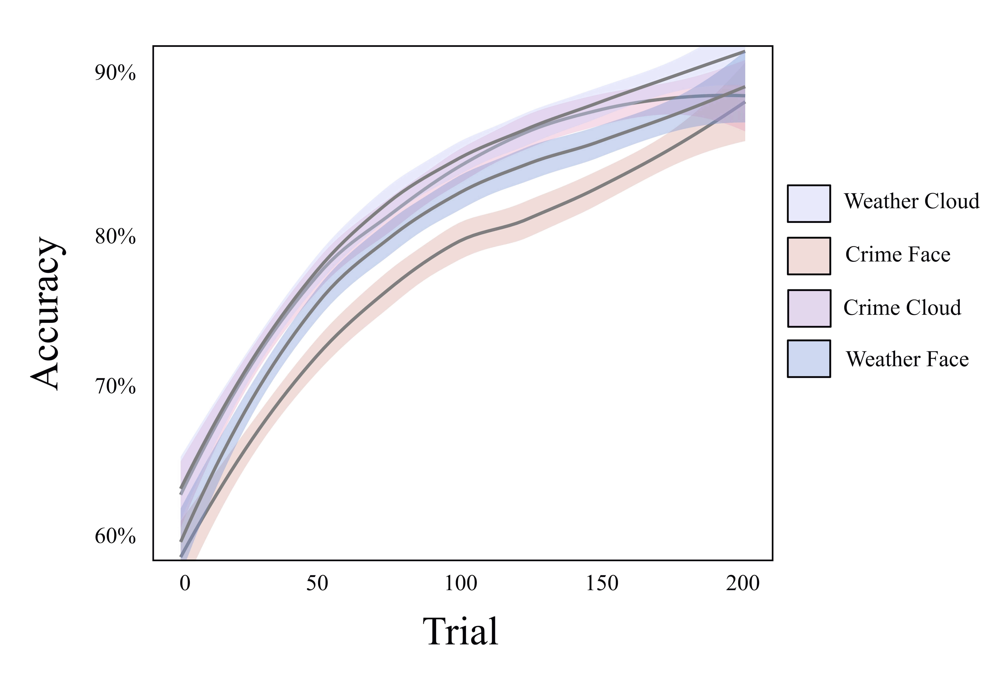

This project investigates the impact of racial stereotypes on decision-making and behavior, focusing on how these stereotypes disrupt people's ability to learn new associations. We aim to understand the boundary conditions of probabilistic learning and the influence of pre-existing associations.
A representative sample of 700 participants were recruited.
To better understand the impact of stereotypes on learning, we assessed participants' motivations and attitudes using the following measures:
I built an interactive learning task using JavaScript, which allows participants to learn the probabilities of card patterns and receive feedback. You can try the live paradigm here.
// Function to display the next narrative section
function next_narrative() {
$("#narrative_0_text").hide();
$("#next_0").hide();
document.getElementById("narrative_1_text").style.display = "table";
$("#narrative_1_text").fadeIn("slow");
$("#next_1").show();
}
// Function to generate the 200 trials with card patterns
function generateTestSequence() {
for (var i = 0; i < patterns.length; i++) {
for (var j = 0; j < patterns[i].tsRounded; j++) {
var currentPattern = new Pattern(null, null, null, null, null);
currentPattern = jQuery.extend(true, {}, patterns[i]);
currentPattern.willSteal = "True";
nonRandomizedPatterns.push(currentPattern); // Add pattern instance to the array
}
for (var k = 0; k < patterns[i].nTSRounded; k++) { // Adding patterns with positive response criteria (they will not steal)
var currentPatternFalse = new Pattern(null, null, null, null, null);
currentPatternFalse = jQuery.extend(true, {}, patterns[i]);
currentPatternFalse.willSteal = "False";
nonRandomizedPatterns.push(currentPatternFalse); // Add pattern instance to the array
}
}
}
We analyzed the differences in learning across conditions using a mixed growth model, regressing accuracy onto a dummy-coded factor for condition and a continuous variable for time. The results revealed:
These learning curve differences can be visually observed in the images below:
Our findings provide valuable insights for understanding the impact of pre-existing associations on learning and decision-making, with practical applications in various fields: